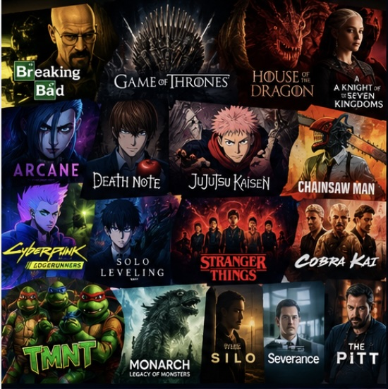
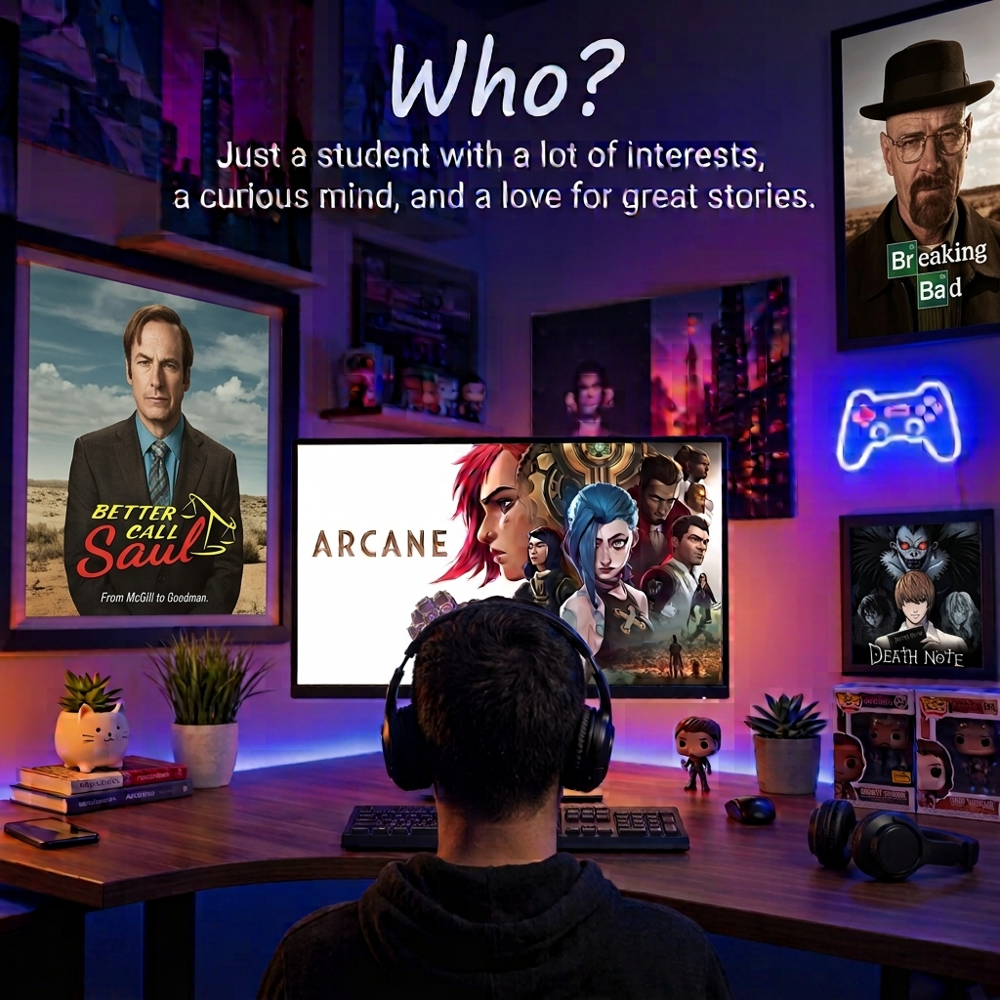

What Is My Hobby?
My hobby is watching television shows and anime. I enjoy getting invested in stories that create immersive settings, memorable characters, and plots that keep me interested from one episode to the next. A great series can make me curious about what will happen, surprised by a major reveal, or interested in thinking about its characters long after an episode ends.
I am especially interested in stories that develop their worlds and characters over time. Rather than relying only on action or excitement, my favorite series often explore identity, ambition, power, morality, and human nature.
Some of the genres I enjoy include:
- Crime dramas and suspenseful mysteries
- Fantasy stories with detailed fictional worlds
- Psychological thrillers and morally complicated stories
- Action series with intense battles and rivalries
- Science fiction that explores unfamiliar ideas
- Anime and animation with distinctive art and storytelling

Image generation tools: ChatGPT and Gemini. Prompt development tools: Claude and ChatGPT. Prompt: Create a colorful collage of popular television and anime poster covers, including Breaking Bad, Game of Thrones, House of the Dragon, A Knight of the Seven Kingdoms, Arcane, Death Note, Jujutsu Kaisen, Chainsaw Man, Cyberpunk: Edgerunners, Solo Leveling, Stranger Things, Cobra Kai, Invincible, Silo, The Boys, Severance, and The Pitt.
Who Enjoys This Hobby?
I am a college student who enjoys exploring different interests outside the classroom. Watching shows gives me a way to relax while also discovering stories that challenge how I think about people, decisions, and the world around me.
I am particularly interested in characters who are complicated rather than completely good or evil. Characters with conflicting motivations, difficult decisions, and changing beliefs make a story feel more realistic and interesting to me.
I also enjoy rivalries, unexpected alliances, shifting loyalties, and the way a character can change over the course of a series. Seeing how those relationships develop is one of the reasons I become invested in a show's story.

Image generation tools: ChatGPT and Gemini. Prompt development tools: Claude and ChatGPT. Prompt: Generate a student watching a show at a computer in a colorful room decorated with television and anime posters, headphones, and collectibles. Include the heading "Who?" and the sentence "Just a student with a lot of interests, a curious mind, and a love for great stories."
When Do I Enjoy This Hobby?
I usually watch shows when I have free time outside my schoolwork and other responsibilities. It is a good way to take a break after finishing assignments or to unwind when I want to step away from a busy schedule.
Longer breaks from school are also a great opportunity to catch up on a series. When I have more time available, it is easier to watch several episodes without feeling like I need to stop immediately to move on to something else.
The time of year can affect the experience, too. A relaxing evening during colder weather feels different from watching an episode on a long summer day, but either can be a good time to enjoy a show.

Image generation tools: ChatGPT and Gemini. Prompt development tools: Claude and ChatGPT. Prompt: Create a four-panel seasonal infographic titled "When?" with the subtitle "Any time is a good time, but some seasons just hit different." Label Spring "Fresh starts. New shows.", Summer "Long days. Binge sessions.", Fall "Cozy vibes. Great stories.", and Winter "Cold nights. Perfect for marathons." Show spring blossoms, a summer sunset, autumn leaves, and snowy mountains.
Where Do I Enjoy This Hobby?
I can enjoy a show anywhere I have a screen and a comfortable place to watch. At home, a television or computer monitor can create a more immersive experience, especially when I want to focus on the details of a series.
A laptop, tablet, or phone also makes watching more convenient. Portable devices are useful when I am traveling or want to watch something without needing to sit in front of a television.
The ideal viewing environment depends on the situation. Good sound, a clear picture, comfortable seating, and fewer distractions can make it easier to become absorbed in a story.

Image generation tools: ChatGPT and Gemini. Prompt development tools: Claude and ChatGPT. Prompt: Create a collage-style infographic titled "Where I Do It" with the subtitle "Home, travel, or anywhere with a screen." Show four scenes labeled Home, Campus, Nature, and Anywhere: a cozy home viewing space, a campus study area, a cabin beside a lake, and a city or travel scene. Connect the scenes with arrows around a central location pin.
How Do I Enjoy This Hobby?
Watching a new series often starts with finding something that catches my attention. It could be a recommendation, an interesting premise, a trailer, or a story with characters I want to learn more about.
Once I find a show that interests me, I usually give it a few episodes to establish its characters and story. Some series take time to develop, so I like giving them an opportunity to build momentum before deciding whether they are worth continuing.
I also try to avoid spoilers whenever possible. Unexpected reveals, important character moments, and major plot developments are often part of what makes a show enjoyable. Discovering those moments naturally can make the overall experience more rewarding.
My Simple Viewing Routine
- Find something interesting to watch.
- Get comfortable and grab some snacks.
- Settle in and focus on the episode.
- Enjoy the action, story, and character development.
- Decide whether the next episode is worth watching.

Image generation tools: ChatGPT and Gemini. Prompt development tools: Claude and ChatGPT. Prompt: Create a cozy step-by-step infographic titled "How I Do It" with the subtitle "A few simple steps." Show a remote and popcorn, with five numbered steps: "Find something good to watch," "Get snacks (essential)," "Find a comfy spot," "Press play and enjoy," and "Repeat." Use simple white icons and arrows to connect the steps.
Why Do I Enjoy This Hobby?
One reason I enjoy watching shows is that good storytelling gives me a chance to experience perspectives and situations different from my own. A story can introduce unfamiliar ideas, challenge assumptions, or encourage me to think about a difficult decision from another point of view.
I also appreciate stories that explore moral ambiguity. Characters do not always make the right decisions, and their motivations are not always simple. Seeing how ambition, fear, loyalty, and personal beliefs affect their choices can make a story more meaningful.
Of course, watching shows is also a source of entertainment and relaxation. I enjoy becoming immersed in fictional worlds, following interesting characters, and taking a break from everyday stress. Sometimes, a series is simply fun to watch, and that is reason enough.

Image generation tools: ChatGPT and Gemini. Prompt development tools: Claude and ChatGPT. Prompt: Create a cozy bedroom infographic titled "Why I Do It" with the subtitle "Because it makes life better." Show an open laptop beside a checklist with "Great stories," "Amazing characters," "Escapes reality," "Builds perspective," "Brings people together," and "It's just fun." Include stacked books labeled Drama, Action, Fantasy, Sci-Fi, Thriller, and Comedy, with a sunset window and a plant.
AI Prompts and Reflection
I used AI tools during different parts of creating this website. ChatGPT and Gemini were used for image generation, while Claude and ChatGPT helped develop prompts, brainstorm ideas, understand the assignment, and troubleshoot code. The following examples describe the prompts and tasks involved in the process.
Prompts for Generating Images
The images for the What, Who, When, Where, How, and Why sections were generated using ChatGPT and Gemini. Claude and ChatGPT helped develop the prompts used to describe the desired images.
- What: Image generation tools: ChatGPT and Gemini. Prompt development tools: Claude and ChatGPT. Create a colorful collage of popular television and anime poster covers, including Breaking Bad, Game of Thrones, House of the Dragon, A Knight of the Seven Kingdoms, Arcane, Death Note, Jujutsu Kaisen, Chainsaw Man, Cyberpunk: Edgerunners, Solo Leveling, Stranger Things, Cobra Kai, Invincible, Silo, The Boys, Severance, and The Pitt.
- Who: Image generation tools: ChatGPT and Gemini. Prompt development tools: Claude and ChatGPT. Generate a student watching a show at a computer in a colorful room decorated with television and anime posters, headphones, and collectibles. Include the heading "Who?" and the sentence "Just a student with a lot of interests, a curious mind, and a love for great stories."
- When: Image generation tools: ChatGPT and Gemini. Prompt development tools: Claude and ChatGPT. Create a four-panel seasonal infographic titled "When?" with the subtitle "Any time is a good time, but some seasons just hit different." Label Spring "Fresh starts. New shows.", Summer "Long days. Binge sessions.", Fall "Cozy vibes. Great stories.", and Winter "Cold nights. Perfect for marathons." Show spring blossoms, a summer sunset, autumn leaves, and snowy mountains.
- Where: Image generation tools: ChatGPT and Gemini. Prompt development tools: Claude and ChatGPT. Create a collage-style infographic titled "Where I Do It" with the subtitle "Home, travel, or anywhere with a screen." Show four scenes labeled Home, Campus, Nature, and Anywhere: a cozy home viewing space, a campus study area, a cabin beside a lake, and a city or travel scene. Connect the scenes with arrows around a central location pin.
- How: Image generation tools: ChatGPT and Gemini. Prompt development tools: Claude and ChatGPT. Create a cozy step-by-step infographic titled "How I Do It" with the subtitle "A few simple steps." Show a remote and popcorn, with five numbered steps: "Find something good to watch," "Get snacks (essential)," "Find a comfy spot," "Press play and enjoy," and "Repeat." Use simple white icons and arrows to connect the steps.
- Why: Image generation tools: ChatGPT and Gemini. Prompt development tools: Claude and ChatGPT. Create a cozy bedroom infographic titled "Why I Do It" with the subtitle "Because it makes life better." Show an open laptop beside a checklist with "Great stories," "Amazing characters," "Escapes reality," "Builds perspective," "Brings people together," and "It's just fun." Include stacked books labeled Drama, Action, Fantasy, Sci-Fi, Thriller, and Comedy, with a sunset window and a plant.
Prompts for Understanding and Brainstorming
-
AI tools used: Claude and ChatGPT.
Help me understand this assignment and explain what I am required to do. Break down the instructions into the required HTML structure, sections, navigation, images, captions, footer, styling, and validation. Explain how I can organize everything into one HTML file while making the sections behave like separate pages.
-
AI tools used: Claude and ChatGPT.
Help me brainstorm topics for a hobby website about watching television shows and anime. Use my interests in immersive settings, memorable characters, morally complicated people, rivalries, crime dramas, fantasy, psychological thrillers, action, science fiction, and animation. Organize the ideas into What, Who, When, Where, How, and Why sections.
Prompts for Coding and Troubleshooting
-
AI tools used: Claude and ChatGPT.
Help me fix these errors in my code and understand what I did wrong. Identify the HTML or CSS issue, explain why it matters, and show the correction without unnecessarily changing my existing design. Make sure the page retains its embedded stylesheet, responsive layout, accessible navigation, and single-page behavior.
-
AI tools used: Claude and ChatGPT.
Review my HTML and CSS against the assignment requirements. Identify missing requirements, accessibility problems, styling issues, and standards-checker errors. Explain what needs to change, and provide corrected code while preserving the organization and design of my existing page.
Reflection on Using AI
AI tools helped me brainstorm ideas, create visual assets, and troubleshoot issues while developing this website. Using ChatGPT and Gemini for image generation allowed me to create visuals that matched the theme of each section. Claude and ChatGPT helped me develop image prompts and work through the assignment requirements.
I reviewed the suggestions provided by AI tools and decided which changes were useful for my website. I also used their explanations to better understand HTML structure, CSS styling, responsive design, and JavaScript navigation. AI was useful as a tool for support and problem-solving, but I still needed to review the resulting code and check it against the assignment requirements.